1.Wśród wielu użytkowników komputerów, pokutuje pogląd, wobec którego czym mniejszy rozmiar piksela w monitorze LCD tym lepiej. Często też mylone jest pojęcie wielkości plamki z wielkością piksela.A tym krótkim artykule postaram się wyjaśnić pojęcie i znaczenie wielkości piksela. A także wykazać, że w większości przypadków większy piksel znaczy wygodniejszą pracę z komputerem.
☑ Odległości od początku jednego do początku następnego piksela
Wielkość plamki monitora LCD jest równa pytanie
2.Rozpowszechniona forma oprogramowania zgodna z zasadą "najpierw wypróbuj, a potem kup", to
☑ Shareware
SHAREWARE —- ROZPOWSZECHNIANA FORMA OPROGRA- MOWANIA, ZGODNA Z ZASADĄ NAJPIERW WYPRÓBUJ, A POTEM KUP
3.Odpowiednikiem Linuksowego programu fsck w systemach rodziny Windows jest program
☑ chkdsk
fsck-Command Examples to Check and Repair Filesystem
4.Aby sprawdzić, który program najbardziej obciąża procesor w systemie Windows, należy uruchomić program
☑ menedżer zadań
program służący do zarządzania procesami danego systemu operacyjnego, monitorowania systemu analizy działania sieci, dysku i innych części składowych komputera. Zapewnia dostęp do informacji takich jak: wydajność komputera, uruchomione aplikacje i procesy (także te działające w tle), stan pamięci komputera. Monitoruje też aktywność sieciową systemu, związane z tym statystki oraz podaje dane dotyczące kont użytkowników. Może też być użyty do ustawiania priorytetu zadań i aplikacji (choć do tego częściej używa się Harmonogramu zadań), pozwala też na „uśmiercenie” (zabicie), czyli zakończenie dowolnego procesu.
5.Narzędzie System Image Recovery dostępne w zaawansowanych opcjach rozruchu systemu Windows 7 umożliwia
☑ przywrócenie działania systemu wykorzystując jego kopię zapasową
http://soisk.pl/tworzenie-oraz-przywracanie-obrazu-systemu-windows-7/
6.Program typu firewall nie chroni przed
☑ Wirusami rozprzestrzeniającymi się pocztą e-mai
Zapora sieciowa (ang. firewall – ściana przeciwogniowa) – jeden ze sposobów zabezpieczania sieci i systemów przed intruzami.
7.Procesor Athlon 2800+ to
☑procesor firmy AMD o wydajności podobnej do procesora Pentium 4 taktowanego częstotliwością 2,8 GHz
Wprowadzając nowy procesor Athlon XP 2800+, AMD zrównuje się z Intelem, który sprzedaje Pentium 4 2,8 GHz. Przynajmniej, jeśli chodzi o oznaczenie, bowiem w rzeczywistości nowy procesor taktowany jest z częstotliwością 2250 MHz. Czy jednak zwiększenie częstotliwości szyny ze 133 do 166 MHz (FSB 333 zamiast FSB 266) daje nowemu procesorowi taką samą wydajność, jaką ma główny procesor Intela? Przetestowaliśmy go na płycie Leadtek K7NCR18D z całkowicie nowym chipsetem NVIDII nForce2 i z następcą bardzo dobrej płyty głównej 8K3A, płytą 8K5A3+ firmy Epox.
8.Złącze zasilacza ATX12V służy do zasilania
☑procesora
urządzenie służące do przetwarzania napięcia przemiennego dostarczanego z sieci energetycznej (100–127 V w Ameryce Północnej, części Ameryki Południowej, Japonii i Tajwanie; 220–240 V w pozostałej części świata) na niskie stabilizowane napięcia stałe, niezbędne do pracy pozostałych komponentów komputera.
9.Zerowanie rejestrów procesora odbywa się poprzez
☑użycie sygnału RESET
Komórki pamięci o niewielkich rozmiarach (najczęściej 4/8/16/32/64/128/256 bitów) umieszczone wewnątrz procesora i służące do przechowywania tymczasowych wyników obliczeń, adresów lokacji w pamięci operacyjnej itd. Większość procesorów przeprowadza działania wyłącznie korzystając z wewnętrznych rejestrów, kopiując do nich dane z pamięci i po zakończeniu obliczeń odsyłając wynik do pamięci. Rejestry procesora stanowią najwyższy szczebel w hierarchii pamięci, będąc najszybszym z rodzajów pamięci komputera, zarazem najdroższą w produkcji, a co za tym idzie – o najmniejszej pojemności. Realizowane zazwyczaj za pomocą przerzutników dwustanowych, z reguły jako tablica rejestrów (blok rejestrów, z ang. register file).
10.Jeżeli podczas podłączenia stacji dysków elastycznych 1,44 MB kabel danych zostanie podłączony odwrotnie, to
☑BIOS komputera zgłosi błąd podłączenia stacji dysków
wyjasn.(w pytani)
11.Najczęstszą przyczyną rozmazywania się tonera na wydrukach z drukarki laserowej jest
☑ Zbyt niska temperatura utrwalacza
wyjasn. rodzaj drukarki wykorzystującej w procesie drukowania światło lasera lub diod LED, w celu naelektryzowania bębna światłoczułego w ten sposób, aby naniósł on odpowiednią ilość tonera z zasobnika na drukowaną powierzchnię, który po utrwaleniu w podwyższonej temperaturze utworzy wydruk. Drukarki laserowe charakteryzują się bardzo wysoką jakością wydruku, a druk jest zwykle wodoodporny i o dużej trwałości. Ogólnie tego typu drukarki można podzielić na kolorowe, wykorzystujące przeważnie 4 różne tonery CMYK, i monochromatyczne – używające wyłącznie jednego, czarnego tonera.
12.Układ elektroniczny RAMDAC występuje w
☑karcie graficznej
wyjasn.ang. Random Access Memory Digital to Analog Converter) to jednoukładowa struktura układu scalonego na karcie graficznej, przeznaczona do przetwarzania sygnału obrazu zakodowanego cyfrowo na sygnał analogowy wyświetlany na ekranie monitora. Konwerter zawiera 4 funkcjonalne bloki: pamięć SRAM, służącą do przechowywania mapy kolorów, oraz 3 przetworniki cyfrowo-analogowe (C/A), po jednym dla każdego koloru podstawowego modelu RGB – czerwonego (R), zielonego (G) i niebieskiego (B).
13.Wskaż nieprawidłowy podział dysku z tablicą partycji MBR 1 partycja
☑podstawowa i 2 rozszerzone
wyjasn. główny rekord rozruchowy, struktura danych zapisana w pierwszym sektorze dysku twardego. Nazywany też Master Boot Block. Zawiera program rozruchowy oraz tablicę partycji.Master Boot Record
Przyklad 1
Dokoncz montaz komputera wedlug wskazan:
1. Zainstaluj procesor.
2. Zainstaluj pamiec RAM.
3. Zainstaluj dysk twardy.
4. Utworz dwie podstawowe partycje na zamontowanym dysku.
5. Zainstaluj system operacyjny ze standardowymi ustawieniami na pierwszej partycji.
6. Zainstaluj wszystkie brakujace sterowniki w systemie.
7. Zainstaluj program antywirusowy.
8. Utworz konto bez uprawnien administratora user.
Pryklady zrobienia
1.https://www.youtube.com/watch?v=40q0n__Jm_E
2.https://www.youtube.com/watch?v=mdocWsfN_gA
3.https://www.youtube.com/watch?v=TNyfLxaJbvI
4.https://www.youtube.com/watch?v=4WDDG1G-js0
5.http://www.komputerswiat.pl/…/2009/10/instalujemy-windows-7…
6.https://www.youtube.com/watch?v=q443CPQ5xWs
7.http://www.mega-net.pl/…/174-zainstaluj-darmowy-antywirus-a…
8.http://soisk.pl/zarzadzanie-uzytkownikami-za-pomoca-net-us…/
E12: Uzytkownicy, pliki i stara tapeta
https://www.youtube.com/watch?v=XEbTK8lS86Q
Przyklad 2
Wybrane zadania.
3. Zainstaluj system operacyjny i pakiet biurowy (zawierający minimum edytor tekstu, arkusz kalkulacyjny) oraz zanotuj nazwy programów i ich wersje.
Uruchamiamy komputer i od razu na klawiaturze zaczynamy pulsacyjnie wciskać klawisz F12 (może t być również ESC, F2, F8 lub inny klawisz - patrz instrukcja obsługi płyty głównej lub notebooka). Po naciśnięciu odpowiedniego klawisza powinno pojawić się menu podobne do tego przedstawionego na screenie:
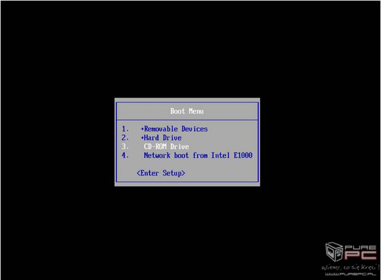
Jeżeli rozpocznie się ładowanie systemu, uruchom ponownie komputer i spróbuj z klawiszami ESC oraz F2. Z przedstawionego wyżej menu zaznaczamy pozycję CD/DVD-ROM i akceptujemy wybór klawiszem Enter. Jeżeli zamiast płyty DVD wykorzystujemy pendrive z instalatorem, to poszukaj opcji Pendrive, USB-HDD bądź Removable Devices i również swój wybór zaakceptuj klawiszem Enter.
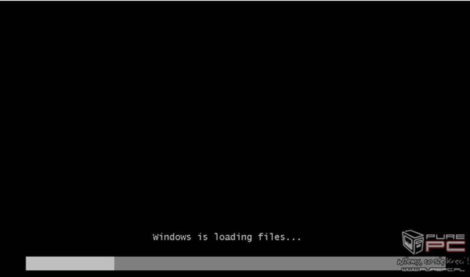
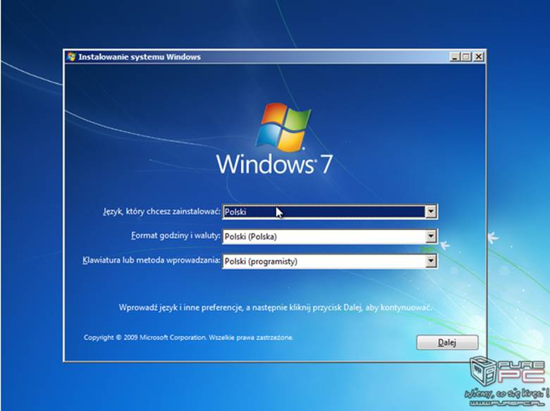
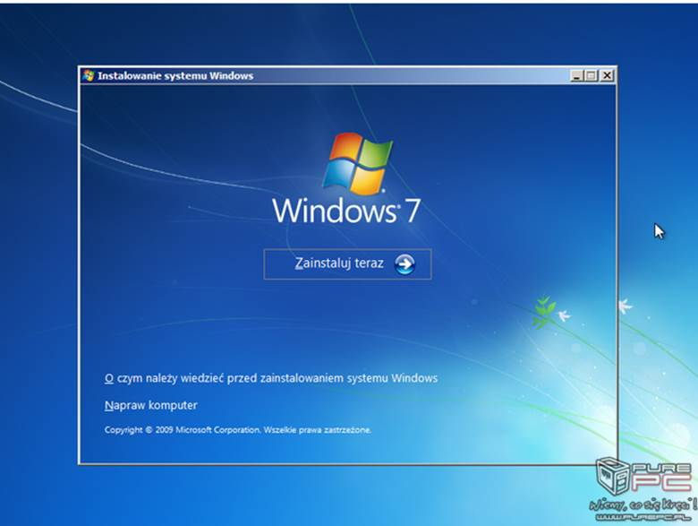
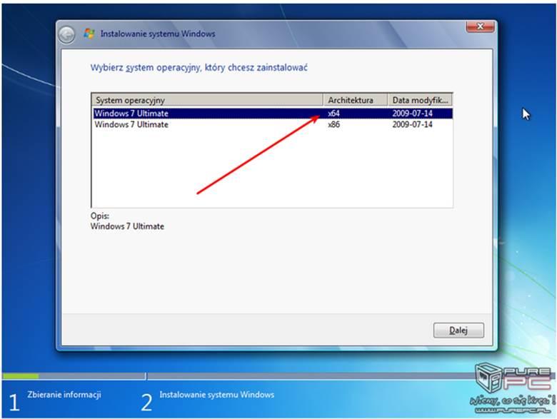
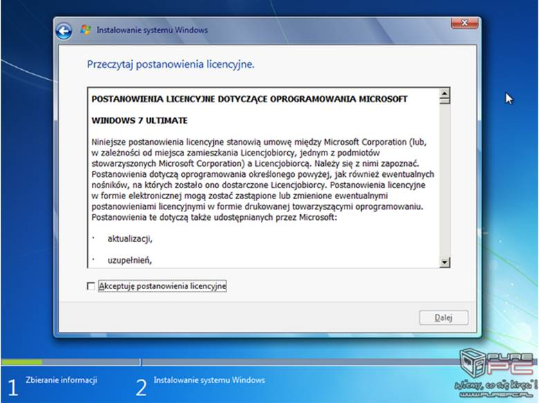
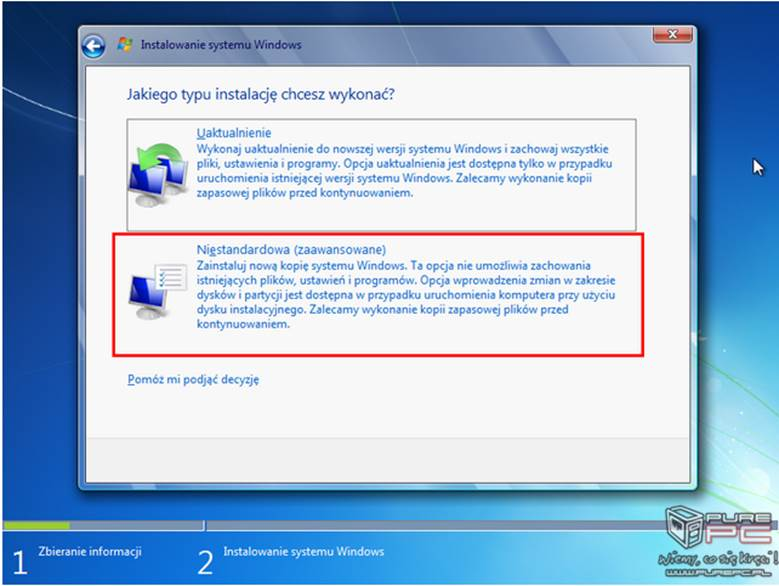
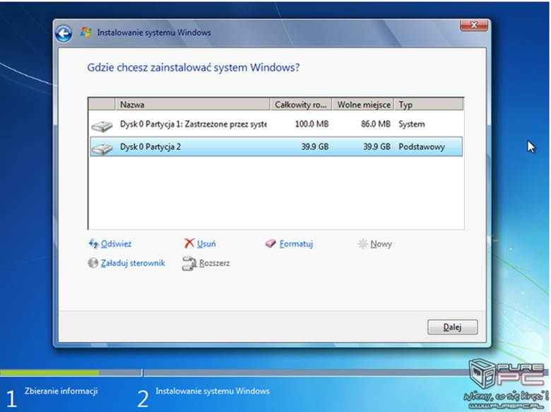
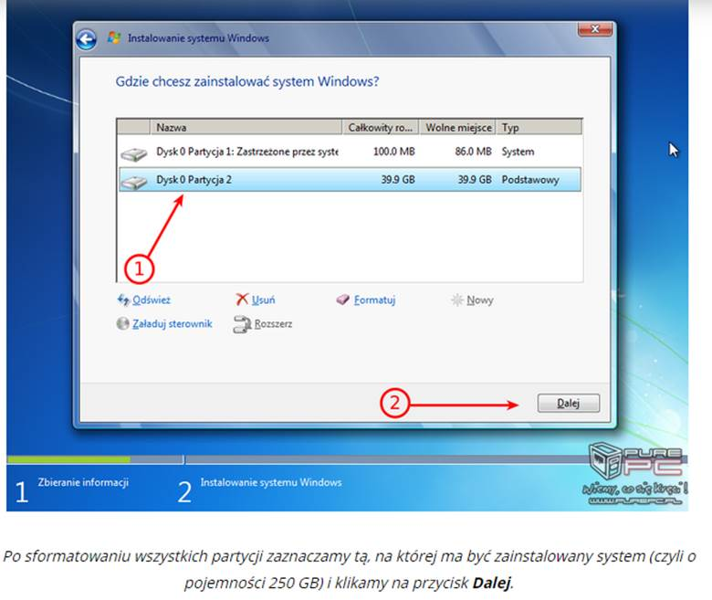
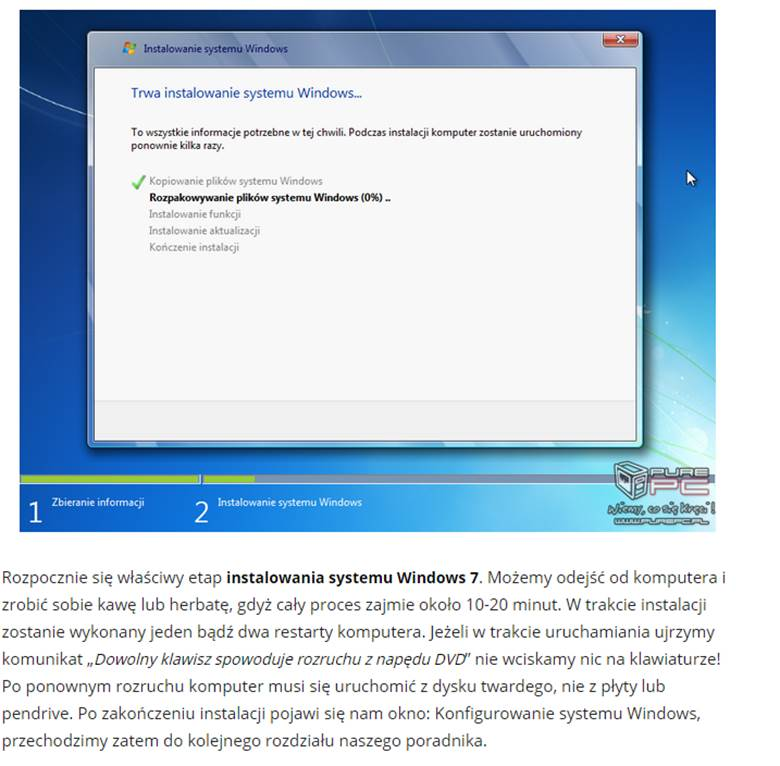
7. Korzystając z Cennika usług komputerowych, sporządź w arkuszu kalkulacyjnym kosztorys wykonanych prac serwisowych zgodnie ze wzorem kosztorysu. Plik zawierający kosztorys o nazwie kosztorys.* umieść na pulpicie użytkownika z loginem kierownik. Sumowanie w kolumnie Wartość usługi (zł) (brutto) powinno odbywać się automatycznie. Zanotuj postać funkcji wyznaczającej wartość sumy.
Tabele, w których, zgodnie z treścią zadania, należy zanotować odpowiednie informacje, znajdziesz w arkuszu egzaminacyjnym Uwaga: Popełnienie błędu przy zapisie hasła użytkownika kierownik lub administrator uniemożliwi ocenę pracy egzaminacyjnej. Czas przeznaczony na wykonanie zadania wynosi 150 minut.
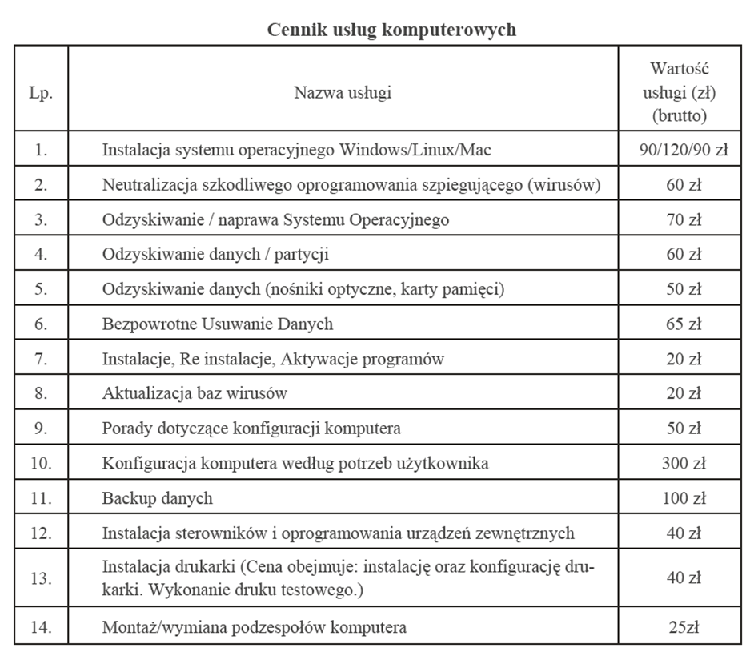
Ocenie podlegać będzie 5 rezultatów:
⚜ Zespół Szkół Ponadgimnazialnych nr.1 | CHEMA0156 | FACEBOOK| ver.0.4 ⚜